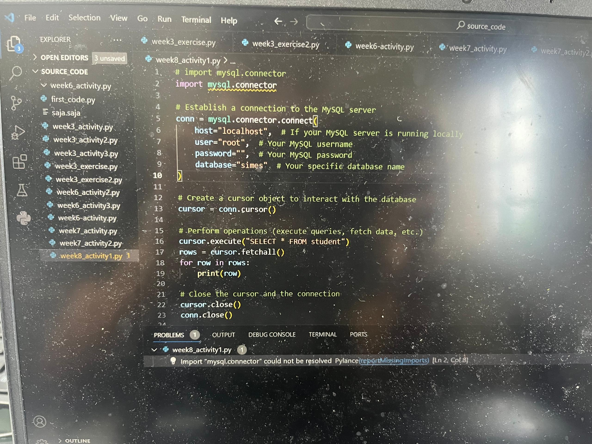
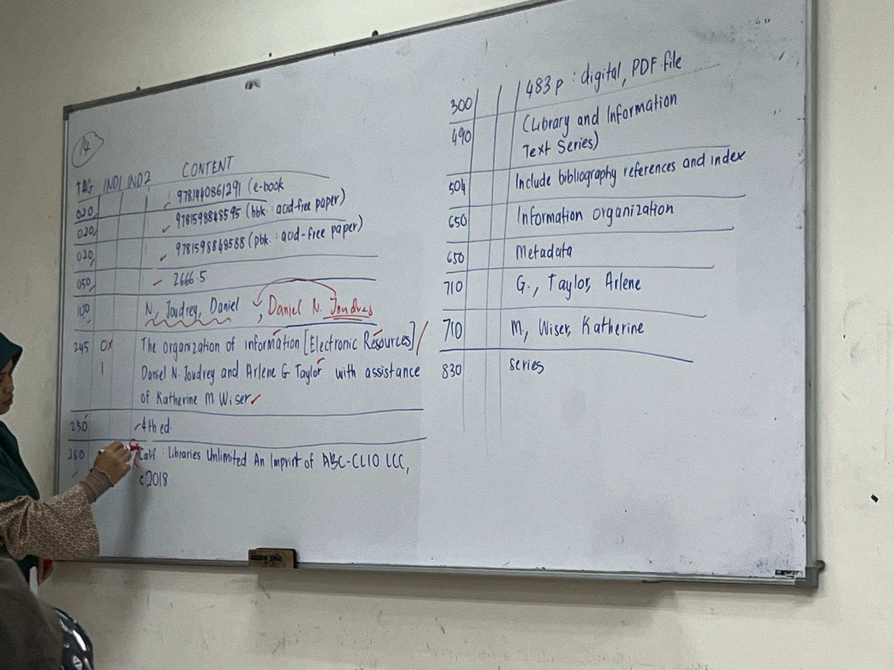
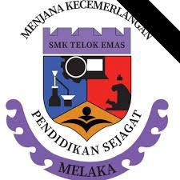

WELCOME TO MY PERSONAL WEBSITE MUHAMMAD FARIS IZZAT BIN MOHAMAD TARMIZI
MY EDUCATION FROM SCHOOL TO UNIVERSITY
Float images side by side:
Name: Muhammad Faris Izzat bin Mohamad Tarmizi
Primary School: Sekolah kebangsaan Telok Panglima Garang
UPSR result: 2A 4B
Secondary School: Sekolah Menengah Kebangsaan Telok Mas
SPM result: 5A 3C 1E :)
Diploma: Currently study at UiTM Kedah in Library Informatic Course



My study adventure still not complete yet, i will try my best to continue my study in banchelor , master and i have a sustenance to continue my study in PHD